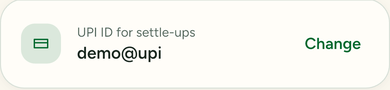
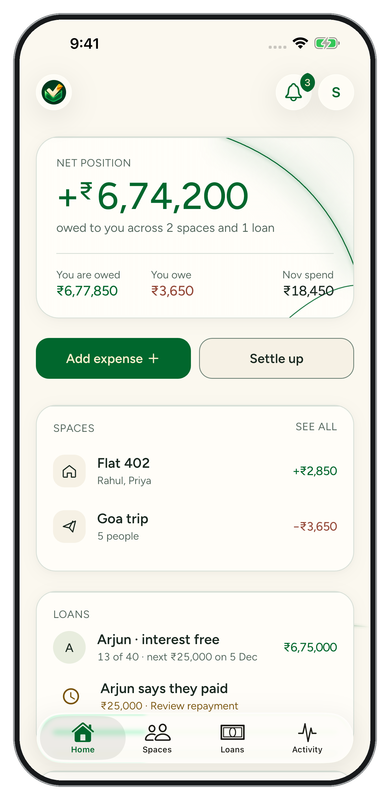
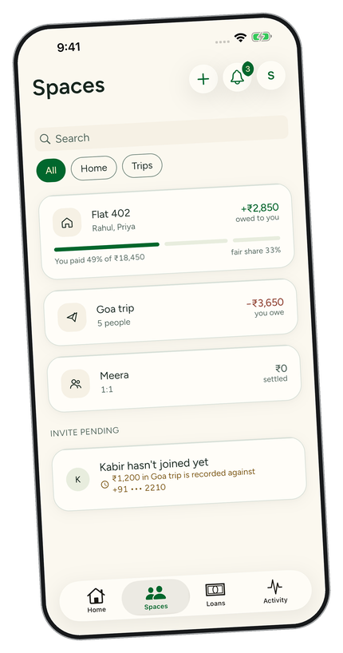
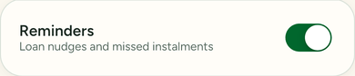
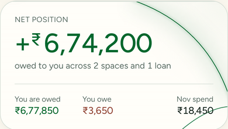
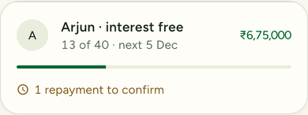
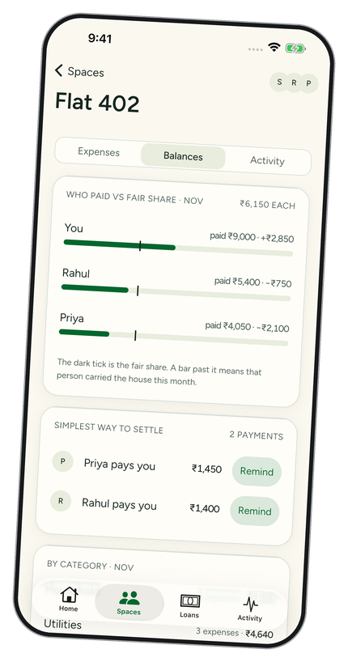
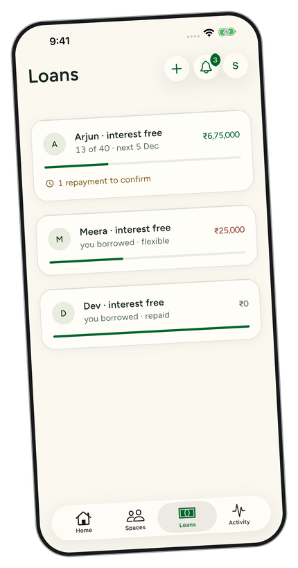
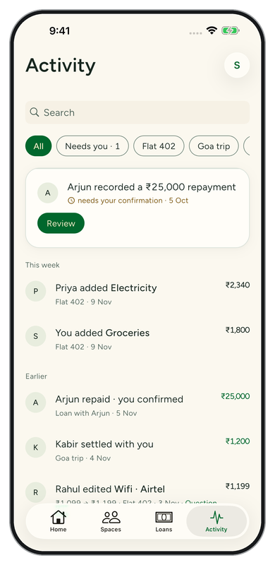

Your money
UPI, not a wallet.
Pay in your own UPI app. SabkiJeb keeps the record; the other person confirms.

For the people you split life with.
The groceries. The Goa trip. The money you lent a friend.
Keep the record together.
Keep the friendship out of the maths.
Email for TestFlight access. iPhone now. Android later.

One Goa balance. Three deliberate steps.
Scroll to follow the record.

Expenses in one space. A clear amount to settle after the trip.
Open the payment details. Pay there, then record it here. SabkiJeb never moves money.
Kabir checks his bank or UPI app and confirms receipt. Only then is the balance clear.
Illustrative walkthrough. Recording a payment is not bank verification.
Why SabkiJeb
Sunday plans · fictional conversation
Tara
I added lunch to our space. Your share is ₹300.
Dev
Paid in my UPI app. Recorded it too.
Neel
Received and confirmed. Same time next week?
Your money
Pay in your own UPI app. SabkiJeb keeps the record; the other person confirms.

A gentle nudge
A 24-hour cooldown between loan reminders. Recipients can turn them off.

Even without a signal
Read saved balances offline. Changes queue until you reconnect. Sign in online first.

A plan between friends
Keep the schedule and what’s outstanding together. Repayments count after confirmation.

Useful every day
Export statements as PDF or CSV when you need to check or share your records.
Choose light, dark or your system appearance in Profile.
See the difference
| What you need | SabkiJeb | Group chat + notebook |
|---|---|---|
| Exact amount per person | Calculated from your split | Work it out yourself |
| Who has paid | Recorded and confirmed | Search messages and check receipts |
| Loan reminders | In-app nudges, with a cooldown | Send each message yourself |
| Running shared tab | Expenses and balances in Spaces | Keep your own totals |
| Personal loans with instalments | Schedule, repayments and confirmations | Maintain a separate schedule |
The old way
The cab is still in someone’s messages.
Now the total needs another correction.
Keep the entries together in Spaces. Balances works out the simplest way to settle.
Spaces · the shared tab
Rent, electricity, Wi-Fi and the cook’s salary.
Flat 402 is three people and a dozen small bills a month. Add each one when it happens: who paid, and how to split it, equally or by exact amounts, percentages or shares.
Balances sets what each person paid against a fair share and gives the simplest way to settle. This month, Priya pays you ₹1,450 and Rahul pays you ₹1,400.
Add flatmates by phone number. They verify it and choose whether to join. SabkiJeb never uploads your address book.



Lent with trust. Kept clear.
₹10,00,000 to Arjun, back in instalments.
A loan to a friend isn’t a grocery bill, so SabkiJeb keeps it apart: what you lent, the instalments, and what’s still outstanding.
When Arjun records a ₹25,000 repayment, it waits for you. Check your bank or UPI app, then confirm it, or say you didn’t receive it. It only counts once you confirm. You can download a statement whenever you need one.
Free, for everyone
Spaces, splits, loans and statements. All the features in the beta are free.
SabkiJeb never moves money. Payments happen in your own UPI app. Check there before confirming a payment in SabkiJeb: we cannot see whether it went through.
Never share your OTP, UPI PIN or bank details with SabkiJeb or its support team. Phone sign-in uses a verification code that you enter only in the app; support never asks you to send it.
No ads. No selling your data. No third-party trackers on this site.
Official SabkiJeb links come only from sabkijeb.app. Links from any other domain aren’t ours. This page links to JOSH Studio, our operator.
For questions, write to support@sabkijeb.app. Read our privacy policy or delete your account.
A quick conversation
Yes. Today, friends use SabkiJeb to join a space, record payments and confirm receipt. Access is through the iPhone TestFlight beta.
SabkiJeb is an iPhone TestFlight beta. Email us for beta access. Android is later; there is no public App Store or Google Play release yet.
No. SabkiJeb opens your own UPI app with the payment details filled in. Approve the payment there, record it in SabkiJeb, and ask the recipient to confirm. SabkiJeb never moves money or automatically verifies payments.
Official SabkiJeb links come only from sabkijeb.app. Links from any other domain are not ours. Our support address is support@sabkijeb.app. Never send support an OTP, UPI PIN or bank details.
Yes. All features in the beta are free. There are no ads and we do not sell your data.
Create a space, invite people by phone number, and record who paid. Split equally or by exact amounts, percentages or shares. Balances works out the simplest way to settle.
Yes. Keep loans separate from group expenses, set instalments, record repayments and confirm money received. Loan reminders have a 24-hour cooldown, and recipients can turn them off.
Yes. Export statements as PDF or CSV from the app.
After signing in online, saved records remain available offline. Changes queue until you reconnect. Let pending changes sync before signing out.
Yes. Open Profile, choose Delete account and confirm. It cannot be undone. If you cannot sign in, email support@sabkijeb.app. Your sign-in and personal identifiers are removed; shared expenses, loans and their history stay in the other people’s records.
It’s on TestFlight for now, and Android comes later. If you’d like to try it, write to us.
Join the iPhone betaScan to open the same beta request email.